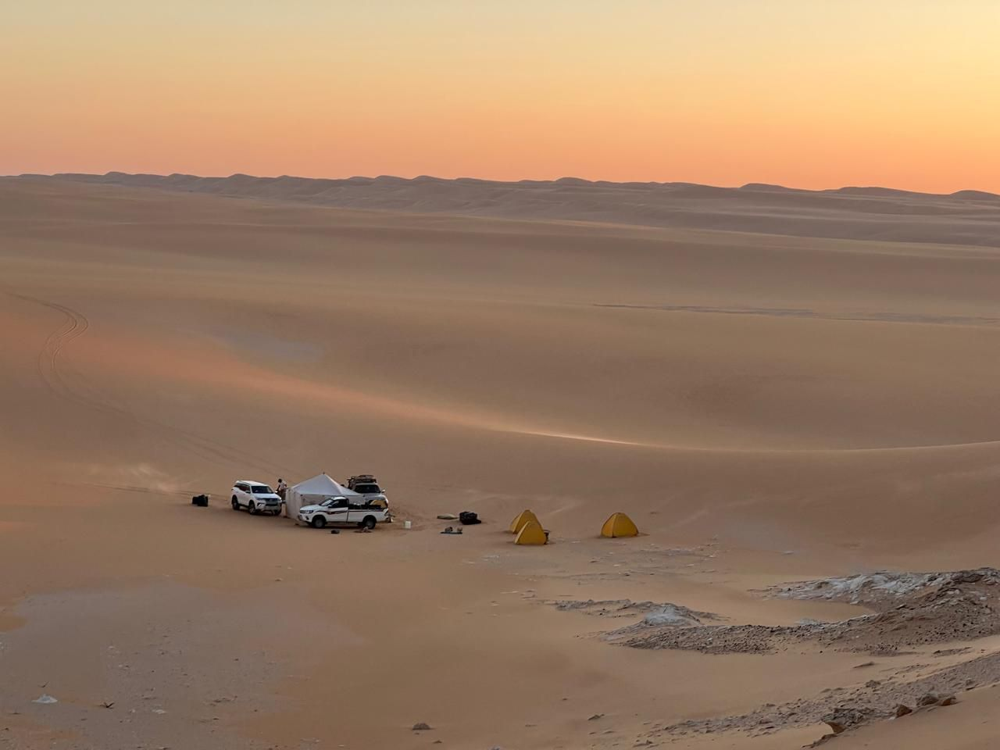
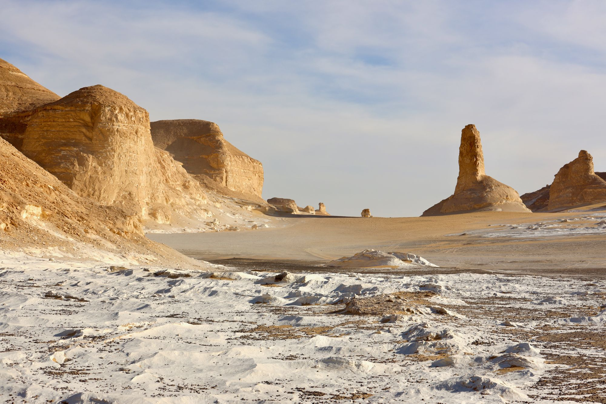
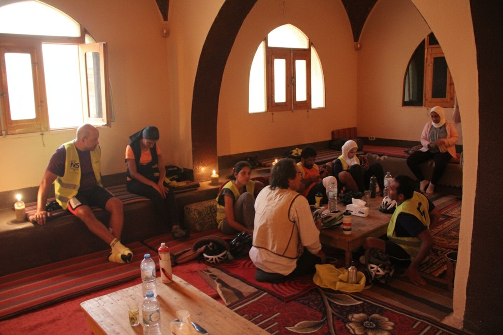
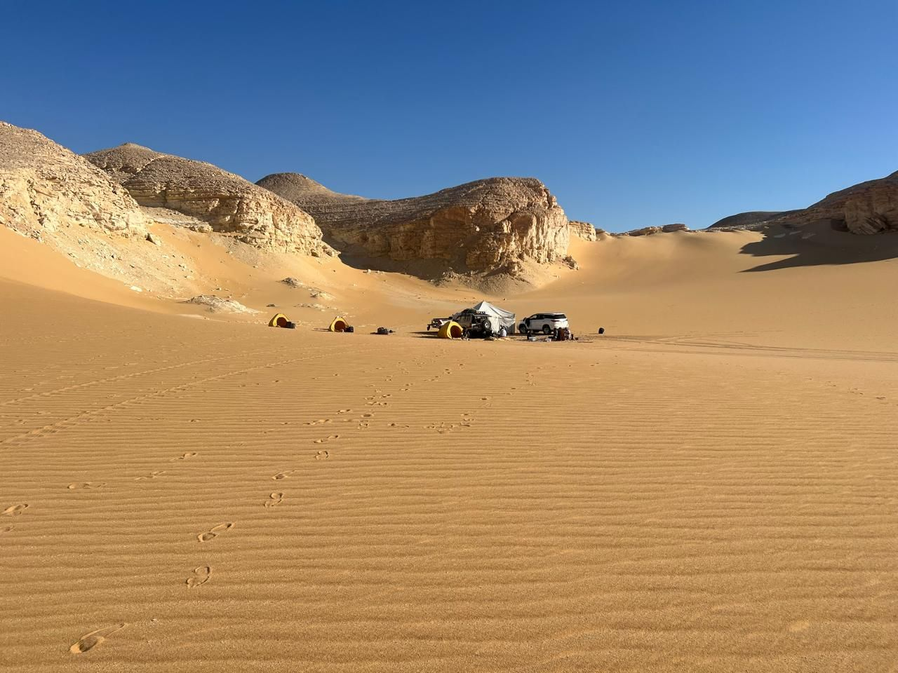
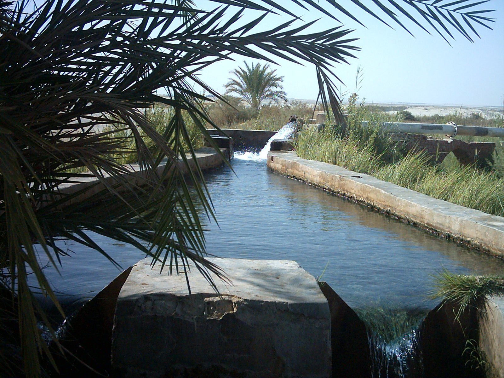
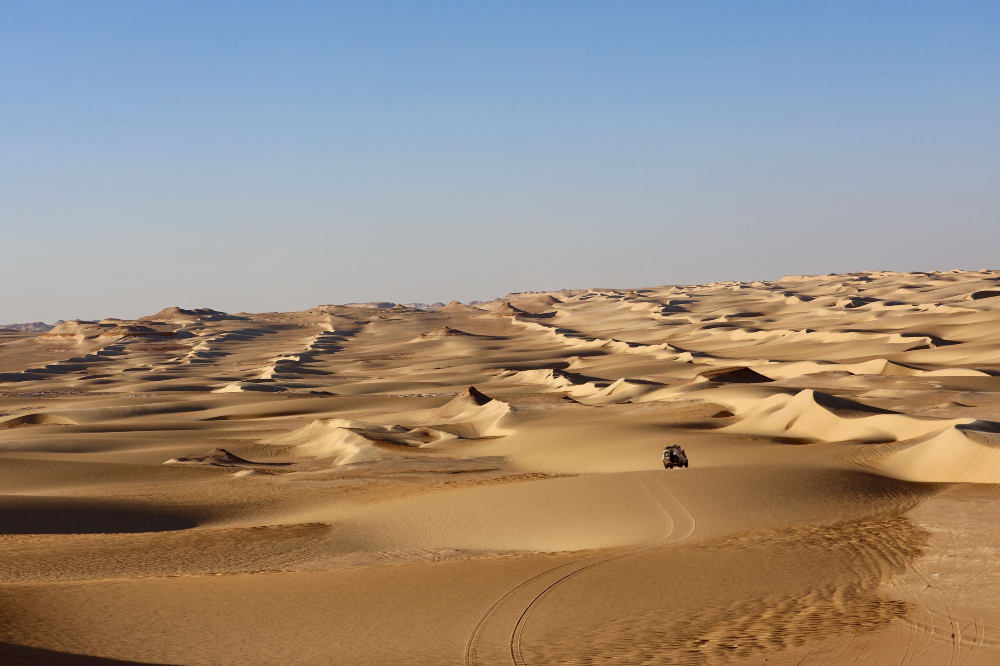

06:10 · First light
Sunrise on the dunes
Climb the nearest crest in silence while the sand turns from grey to gold.
40 minCamp ridge

Remote oases, ancient caravan routes and the dunes of the Great Sand Sea — crossed by 4×4, camel or on foot with an experienced local team and our own desert camp in the oasis of Abu Monkar.
Bookings are made by talking to our team: we prepare every expedition for you.
We built Sand Gate Camp
 by hand, in earth and palm, at the edge of the oasis — a caravanserai for travellers between Farafra and Dakhla
by hand, in earth and palm, at the edge of the oasis — a caravanserai for travellers between Farafra and Dakhla
 and a gateway to the Great Sand Sea.
and a gateway to the Great Sand Sea.
On the move, the light sets the pace. We start before the heat, rest in the shade at midday and make camp in time to watch the sun go down over the dunes.

Climb the nearest crest in silence while the sand turns from grey to gold.

Bread from the fire, dates, cheese and strong tea before the vehicles are loaded.
4×4 stages across dune fields, plateaus and white chalk, with stops wherever the land asks for one.

Lunch prepared by the crew in the shade of a rock or an acacia. The desert goes still, and so do we.

A bath in a thermal spring, a walk through a palm grove, or the walls of a Roman fortress.

Tents go up, the fire is lit, and the sky fills with more stars than most of us have ever seen.
Two signature crossings from Cairo, and routes built around you — from a single day in the White Desert to several weeks between the oases.
See all expeditions
White Desert, Great Sand Sea and the Roman fortresses and tombs of Kharga.

Djara Cave, the dunes of Abu Muharriq and the fossil whales of Wadi Hitan.

Private and group routes by 4×4, camel caravan or on foot, adapted to your dates.

The Libyan Desert covers two-thirds of Egypt, from the Mediterranean to the Gilf Kebir. Its five great oases have been lived in since before the pharaohs, and every one of them was a stop on the caravan roads to Africa.
Every route can be travelled by 4×4, at the pace of a camel caravan, or on foot. Most expeditions combine them. Our Bedouin guides and drivers decide the line; we make sure everything around it works.
Off-road across the Great Sand Sea and through the chalk sculptures of the White Desert, starting from Bahariya.
The pace of the old caravan routes, walking beside the camels and sleeping where the caravans once stopped.

Walking routes to canyons, rock art and the ruins of Roman-era fortresses, at a pace that leaves room to look.

On the Cairo – Kharga crossing the landscape changes every day: white chalk, sand sea, palm oasis, then the Roman frontier. Four moments along the way.

Crystal Mountain, then the Agabat pass into the chalk formations.

Sunrise at Agabat, tea at Bir Khadra, and a camp where the dunes begin.

A rest day at Sand Gate Camp: the oasis, Bir Mahmoud and a thermal bath.
A Roman fortress, its tombs and the qanats that carried water underground.

Sand Gate Camp stands on a 5,000 m² plot among some 80 hectares of palms and fruit trees in Abu Monkar. Built from 2009 with traditional earth techniques, it is our base between the oases and the dunes.

Each campsite is picked for shelter from the wind, a clear horizon and a good place to watch the sun go.

The crew cooks over embers. Tea is poured, stories are told, and nobody looks at a phone.
Far from any town, the Milky Way rises over the dunes. Plan around the full moon if you want the stars, or for it if you want the dunes to glow.
We know these tracks because we live on them.
Our guides and drivers are Bedouin — the people who have always crossed this desert.
Every vehicle carries GPS and a satellite phone. Safety is not an extra.
From a single day to several weeks, the route is built around you, not a catalogue.
Less conventional crossings: Roman forts, forgotten temples, caravan roads.
We run desert expeditions for travel agencies and specialist operators in adventure, trekking, photography and nature travel. Fixed itineraries or routes designed for your clients.
There is no automatic booking: every expedition is prepared for you. Tell us your dates, group size and travel style, and we reply personally with availability and a quote.
Bookings desk open 08:00–20:00 Egypt time. Prefer a form? Go to contact